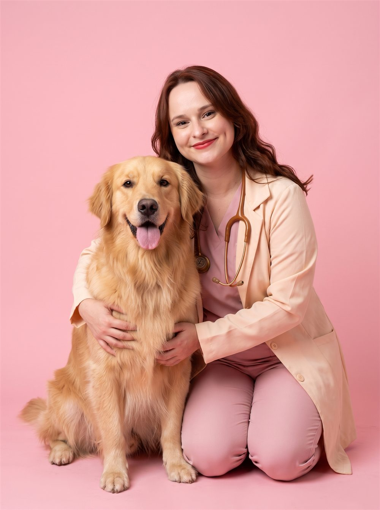

Consulta em casa
Avaliação do seu pet no lugar onde ele se sente seguro, com tempo para conversar sobre a rotina e tirar as suas dúvidas.
- Atendimento sem sair de casa
- Sem sala de espera
- Para cães e gatos
Atendimento veterinário a domicílio
Consulta e vacina no conforto do seu lar, em dias combinados. Sem estresse no transporte e sem sala de espera.
Atendemos às terças, quintas e sábados
Consultas e vacinas às terças, quintas e sábados.
Toque em um dia para começar. O horário você escolhe na agenda.


Como funciona
São três passos. Você escolhe o dia, a gente vai até você, e o seu pet é atendido no lugar onde ele se sente seguro.
Escolha consulta ou vacina, o dia e o horário na agenda e envie o pedido pelo WhatsApp.
Terça, quinta ou sábadoA Ariadina confirma o horário e chega até a sua casa. Sem caixa de transporte, sem trânsito e sem sala de espera.
Sem estresse no transporteA consulta ou a vacina acontece no cantinho favorito do seu pet, com calma e atenção.
Consulta e vacinaTrês cuidados simples deixam tudo mais tranquilo para o seu pet.
Atendemos às terças, quintas e sábados.
Serviços
Consulta e vacina para cães e gatos, às terças, quintas e sábados. Escolha o serviço e vá direto para a agenda.
Avaliação do seu pet no lugar onde ele se sente seguro, com tempo para conversar sobre a rotina e tirar as suas dúvidas.

Vacinação no conforto do seu lar, sem transporte e sem o estresse de uma clínica movimentada.
Dicas
Pequenos cuidados antes da chegada deixam o seu pet mais tranquilo.
Deixe o pet em um lugar com pouco barulho, de preferência com a porta fechada, para ele não se assustar com a chegada.
Deixe à mão a carteirinha de vacinação e, se houver, receitas e exames anteriores.
Gatos costumam ficar mais calmos no território deles. Mantenha o cantinho preferido do seu gato disponível durante a visita.
Se o seu cão é muito agitado ou tem medo de visitas, conte isso no campo de observações da agenda.
Escreva o que quiser perguntar sobre rotina, alimentação ou comportamento. Assim nada fica de fora durante a consulta.
Sobre a Ariadina
Sou veterinária e atendo cães e gatos em casa, às terças, quintas e sábados. Porque cuidar também é respeitar o tempo, o espaço e o conforto de cada pet.

Atendimento em casa
Minha história
Preencher: conte em 2 ou 3 frases como você chegou à veterinária e por que escolheu atender no lar do pet
Depoimentos
Perguntas frequentes
As respostas mais comuns sobre o atendimento em casa. Se a sua pergunta não estiver aqui, conte na hora de agendar.
Agende sua visitaAtendemos às terças, quintas e sábados. Os horários disponíveis aparecem na agenda, depois que você escolhe o dia.
Consulta e vacina, no conforto da sua casa. Escolha o serviço na hora de agendar.
Na agenda do site, você escolhe o serviço, o dia e o horário, preenche os dados e envia o pedido pelo WhatsApp. O horário só fica reservado depois que a Ariadina confirmar.
Informe o endereço no pedido de agendamento. A Ariadina confirma se consegue atender a sua região.
Deixe o pet em um cômodo tranquilo, separe a carteirinha de vacinação e anote as suas dúvidas. Veja mais dicas na seção de serviços.
Avise pelo WhatsApp o quanto antes. A Ariadina combina com você um novo dia e horário.
Este atendimento é para consultas e vacinas agendadas. Em caso de emergência, procure imediatamente um pronto-atendimento veterinário.
Agenda online
Atendemos às terças, quintas e sábados, em casa. Escolha o serviço, o dia e o horário, e envie o pedido pelo WhatsApp. O horário só fica reservado depois que a Ariadina confirmar.
Dias com atendimento: terça, quinta e sábado
Ainda não há um número de WhatsApp configurado. O botão abaixo copia esta mensagem para você enviar.
Este pedido só vira agendamento depois que a Ariadina responder confirmando o horário.